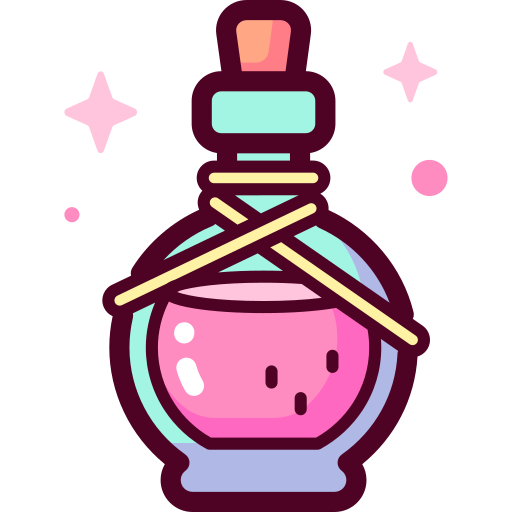

🌿
📷
Druid
Circle of the Moon Druid
Human · Outlander
3
Level
Build: STR 8, DEX 14, CON 14, INT 10, WIS 17, CHA 8
STR
−1
DEX
+2
CON
+2
INT
+0
WIS
+3
CHA
−1
Derived Stats — Level 3
HIT POINTS
auto: 22
ARMOR CLASS
14
Leather + DEX
PROFICIENCY
+2
Levels 1–4
SPELL SAVE DC
13
8 + Prof + WIS
SPELL ATTACK
+5
Prof + WIS
PREPARED
6
WIS mod + Lv
Available Spell Slots
Saving Throws
Skills

Equipment & Inventory ▼Cantrips
0
Prepared
0/6
Circle 🌙
3
Saved Characters